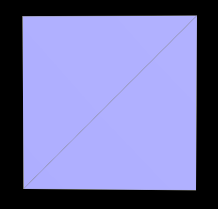

In the previous section, we implemented a function that evaluates Bezier Curves from de Casteljau's algorithm. In this part, we see how this concept becomes helpful in representing 3D meshes. Like before, we still recursively calculate points by linearly interpolating between them, however instead of doing this in a 2D space, we are calculating curves in a 3D space. This requires data types in three dimensions and an extra layer of calculation: we first calculate the Bezier curve between multiple lines, and then find the interpolated result of that curve in the u,v space. In short, the same algorithm, with a few adjustments, allows us to draw curves in 3D and represent different meshes like this elegant teapot and this jazzy cube.
In the second half of the project we are introduced to a data type called the HalfEdge. It allows us to easily traverse our 3D mesh and access all crucial aspects of the object such as faces, vertices, and edges. Using this information, we can implement several functions that are useful for mesh editing and manipulation. In this section, we implemented one such function which takes the average weighted normals at each vertex. To calculate this average, I found the cross product of our "current vertex" and its neighbors, and then iterated through all the vertices in our Halfedge instance to perform this calculation on the entire object. As a result, the 3D meshes appear to have more detailed shading and seemingly smoother topology, giving way to some truly wonderful models.
|
A beautiful cow
|
| | | | | | | | | |
An even more beautiful cow
|
Part 4: Half-edge flip
The next two parts of the project dealt extensively with the HalfEdge data type and reassignments of pointers and references. In this section, we are supposed to write a function that can flip a selected edge without removing or changing other surrounding edges. Though this sounds simple in theory, the actual process required the use of MANY variables and references to objects in the data type. This meant keeping track of ALL edges, vertices, faces, and HalfEdges that are both in the original mesh and that will be there in the flipped mesh. Of course with this many variables to remember, it's a given that I was going to misrepresent or incorrectly assign some of them. At first, this function didn't flip edges but rather deleted faces! (A useful functionality but not the one we wanted).
After some double checking into my assignments, faces were no longer being erased, but the edges were still not flipping properly: sometimes they would produce a duplicate edge that overlaps the original, other times it wouldn't flip anything until the second or third time I pressed the key. It was all baffling to me, and I never thought I'd be able to pinpoint the problems, until I realized that the pictures I had drawn in the beginning were all wrong to start with: instead of flipping only one edge in the HalfEdge, I was flipping the entire HalfEdge. With that revelation, I was able to rename and reassign my pointers properly, and as a result we have a teapot that beautifully flips edges (without deleting faces)!
|
A teapot with standard edges
|
A teapot with flipped edges
|
Part 5: Half-edge split
Similar to the previous section, this part involved an impressive number of variables and reassignments. Instead of flipping one edge however, this time we have to correctly insert several new edges, faces, and vertices and still reassign our HalfEdges correctly. The process was certainly long, but thankfully, after the learning experience of the previous part, I better understood the Halfedge data type and the operations we are performing on it. This meant that I just needed to be EXTREMELY careful about my diagrams and the way I implemented them. Of course, I inevitably made some reassigning errors in the process. One error I had was in the deleting of some edges I thought we would no longer need at the end. Interestingly, this didn't cause any problems for testing this part, however, it caused some segmentation fault errors in the next part in which the original edge that is split becomes VERY important. After making some adjustments to that implementation, the splitting WORKED and allowed for some interesting results in the mesh, especially with the combination of flipping and splitting. Though the functionality of flipping and splitting edges doesn't seem apparent right now, they become extremely useful in the last part.
|
Before Split Operation
|
| | | |
After Split Operation
|
|
Before Split & Flip Operations
|
| | | |
After Split & Flip Operations
|
Part 6: Loop subdivision for mesh upsampling
In the final part of the project, we implemented mesh subdivision utilizing the functions we wrote in parts 4 and 5. This function was certainly trickier than most of the other parts and it required many thorough steps of looping through the objects vertices and edges, performing the proper operations, and reassigning the positions of the necessary aspects. First, we needed to label what was part of the "original" mesh so that we can keep track of what needs to be split and flipped. Then, we calculated the new positions of the vertices and edges that will be created in the process. Once we have this information, we went through the object and applyed the split and flip operations where it was appropriate on the mesh (where there were the proper number of "new" and "old" vertices or edges). If all of these steps are implemented properly then get the functionality of the pictures below. With each increasing level of subdivisions, the original object is smoothed and rounded at the edges, and becomes increasingly smaller. This represents an object being upsampled in 3D space.
|

Original Mesh
|
 Subdivision Level 1
Subdivision Level 1
|
Subdivision Level 2
|
Subdivision Level 3
|
Of course, as with anything in this project, if one small thing was off, then the results would not be as pretty. For example, this accidentally made, crumpled paper was the result of my new edges being incorrectly calculated and assigned.
|
The result of some artistic miscalculations
|
Another interesting result is that the object would slowly become more asymmetrical as it was further subdivided. Though perhaps unintentional, it could be manipulated and changed by splitting and flipping edges before the subdivision operations are performed. With a different topology and extra edge information around the sides, the subdivisions become more symmetrical than before. For example, in the pictures below, we can see that the mesh on the bottom that did not have any edge manipulation prior to the subdivision is more lop-sided than the one on the top which did have several edge flips and splits before subdividing. In the end, the same original object has a different end result due to the topology changes we made in the beginning.
|
Subdividing without edge manipulation
|
|
Subdividing with edge manipulation
Section III: Mesh Competition
Part 7: Design your own mesh!
For the art competition, I decided to make a 3D model of Beast from Beauty and the Beast. Using modeling softwares like Maya and Zbrush, I sculpted the shape of the head and brought the model into the Mesh Editor I made for this project.
|
|
Beast-Wireframe
 Beast-Front
Beast-Front
|
Beast-Side
|